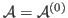

Next:
Hamaker 0: for [6,5],
Up:
Surface plots for Hamaker
Previous:
Surface plots for Hamaker
Contents
Fully Retarded
Subsections
Hamaker 0:
for [6,5], [9,1], and [29,0] in water
Hamaker 2:
for [6,5], [9,1], and [29,0] in water
Total Hamaker:

+
for [6,5], [9,1], and [29,0] in water
Jaime 2014-04-09